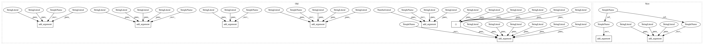

29db4abdbeb839340ac5b0caf934ebda93892934,cnvlib/commands.py,,,#,587
Before Change
choices=("mean", "median", "mode", "biweight"),
help=Re-center the log2 ratio values using this estimate of the
center or average value.)
P_call.add_argument("--filter", action="append", default=[], dest="filters",
choices=("ampdel", "cn", "ci", "sem", // "bic"
),
help=Merge segments flagged by the specified filter(s) with the
adjacent segment(s).)
P_call.add_argument("-m", "--method",
choices=("threshold", "clonal", "none"), default="threshold",
help=Calling method. [Default: %(default)s])
P_call.add_argument("-t", "--thresholds",
type=csvstring, default="-1.1,-0.25,0.2,0.7",
help=Hard thresholds for calling each integer copy number, separated
by commas. Use the "=" sign on the command line, e.g.: -t=-1,0,1
[Default: %(default)s])
P_call.add_argument("--ploidy", type=int, default=2,
help="Ploidy of the sample cells. [Default: %(default)d]")
P_call.add_argument("--purity", type=float,
help="Estimated tumor cell fraction, a.k.a. purity or cellularity.")
P_call.add_argument("-x", "--sample-sex", "-g", "--gender", dest="sample_sex",
choices=("m", "y", "male", "Male", "f", "x", "female", "Female"),
help=Specify the sample"s chromosomal sex as male or female.
(Otherwise guessed from X and Y coverage).)
P_call.add_argument("-y", "--male-reference", action="store_true",
help=Was a male reference used? If so, expect half ploidy on
chrX and chrY; otherwise, only chrY has half ploidy. In CNVkit,
if a male reference was used, the "neutral" copy number (ploidy)
of chrX is 1; chrY is haploid for either reference sex.)
P_call.add_argument("-o", "--output",
help="Output table file name (CNR-like table of segments, .cns).")
P_call_vcf = P_call.add_argument_group(
After Change
tabio.write(segments, args.output or segments.sample_id + ".cns")
P_segment = AP_subparsers.add_parser("segment", help=_cmd_segment.__doc__)
P_segment.add_argument("filename",
help="Bin-level log2 ratios (.cnr file), as produced by "fix".")
P_segment.add_argument("-o", "--output",
help="Output table file name (CNR-like table of segments, .cns).")
P_segment.add_argument("-d", "--dataframe",
help=File name to save the raw R dataframe emitted by CBS or
Fused Lasso. (Useful for debugging.))
P_segment.add_argument("-m", "--method",
choices=("cbs", "haar", "flasso"), default="cbs",
help=Segmentation method (CBS, HaarSeg, or Fused Lasso).
[Default: %(default)s])
P_segment.add_argument("-t", "--threshold", type=float,
help=Significance threshold (p-value or FDR, depending on method) to
accept breakpoints during segmentation.)
P_segment.add_argument("--drop-low-coverage", action="store_true",
help=Drop very-low-coverage bins before segmentation to avoid
false-positive deletions in poor-quality tumor samples.)
P_segment.add_argument("--drop-outliers",
type=float, default=10, metavar="FACTOR",
help=Drop outlier bins more than this many multiples of the 95th
quantile away from the average within a rolling window.
In pattern: SUPERPATTERN
Frequency: 3
Non-data size: 9
Instances
Project Name: etal/cnvkit
Commit Name: 29db4abdbeb839340ac5b0caf934ebda93892934
Time: 2017-02-24
Author: eric.talevich@gmail.com
File Name: cnvlib/commands.py
Class Name:
Method Name:
Project Name: etal/cnvkit
Commit Name: 47f6b481964339b4a7ae8e15f3a3610b9722aeb6
Time: 2018-01-10
Author: eric.talevich@gmail.com
File Name: cnvlib/commands.py
Class Name:
Method Name:
Project Name: etal/cnvkit
Commit Name: 29db4abdbeb839340ac5b0caf934ebda93892934
Time: 2017-02-24
Author: eric.talevich@gmail.com
File Name: cnvlib/commands.py
Class Name:
Method Name:
Project Name: etal/cnvkit
Commit Name: 85400dbc865f2d8e632242153fa4576e711f104d
Time: 2016-10-05
Author: eric.talevich@gmail.com
File Name: cnvlib/commands.py
Class Name:
Method Name: